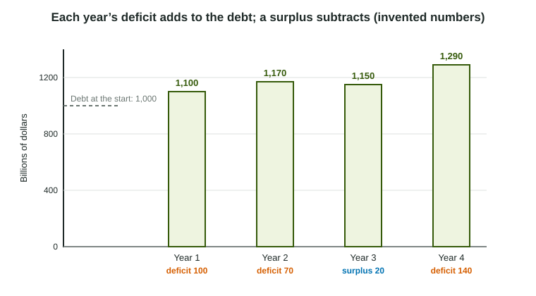

Every fiscal policy choice shows up in the government's budget. Raise spending or cut taxes to fight a recession, and the government takes in less than it pays out. This topic names the two numbers that track that gap, the budget deficit and the national debt, and shows how they are linked. They are easy to mix up, and the difference matters for every question about borrowing that follows in Unit 5.
The budget balance
Each year a government collects tax revenue and pays out outlays: purchases of goods and services, transfer payments such as unemployment benefits and pensions, and interest on what it already owes. The budget balance compares them:
| Balance | Name | What the government does | Effect on the debt |
|---|---|---|---|
| Negative (outlays above revenue) | Budget deficit | Borrows the difference by selling bonds | Rises by the deficit |
| Zero | Balanced budget | Neither borrows nor repays | About unchanged |
| Positive (revenue above outlays) | Budget surplus | Can repay some bonds | Falls by the surplus |
Deficit is a flow, debt is a stock

A deficit is measured over a period, one year: it is a flow, like water running into a bathtub. The national debt is measured at a point in time: it is a stock, the water already in the tub. The debt is the sum of all past deficits minus all past surpluses. Each year's deficit adds to it; only a surplus drains it.
Worked example: from deficits to debt. An invented government owes 1,000 billion dollars at the start of Year 1. Its budget over three years:
- Year 1: revenue 800, outlays 900. Balance : a deficit of 100. Debt: .
- Year 2: revenue 850, outlays 920. Deficit of 70, smaller than Year 1's. Debt still rises: .
- Year 3: revenue 900, outlays 880. Balance : a surplus. Debt falls: .
The deficit fell from Year 1 to Year 2, but the debt kept rising. Only in Year 3, with a surplus, did the debt fall.
Slip to avoid: "The deficit fell, so the debt fell." A smaller deficit is still new borrowing; the debt grows more slowly, but it grows.
Why deficits change
Deficits change for two kinds of reasons.
- Policy choices. Expansionary fiscal policy (more government spending or transfers, lower taxes) widens a deficit or shrinks a surplus. Contractionary fiscal policy does the reverse. So the policy that closes a recessionary gap also adds to the debt.
- The business cycle. In a recession, incomes and profits fall, so tax revenue falls, and more people collect unemployment benefits, so transfers rise. These automatic stabilizers widen the deficit with no new law. In an expansion, revenue rises and transfers fall, and the deficit narrows.
Interest is a third link. Interest payments on the debt are part of outlays, so a larger debt, or higher interest rates on new bonds, means larger outlays and a larger deficit for the same programs.
How deficits are financed
A government covers a deficit by borrowing: it sells bonds to households, firms, banks, pension funds and lenders abroad. Those bonds are the debt. Borrowing on that scale draws on the economy's pool of saving, which is the subject of the next topic: what government borrowing does to the real interest rate and to private investment.
Economists often compare the debt with the size of the economy, as debt divided by GDP, because a larger economy can carry a larger debt. Whether a particular level of debt is too high is a debated question of policy; for the exam, the key skills are the definitions, the arithmetic and the cause-and-effect links above.